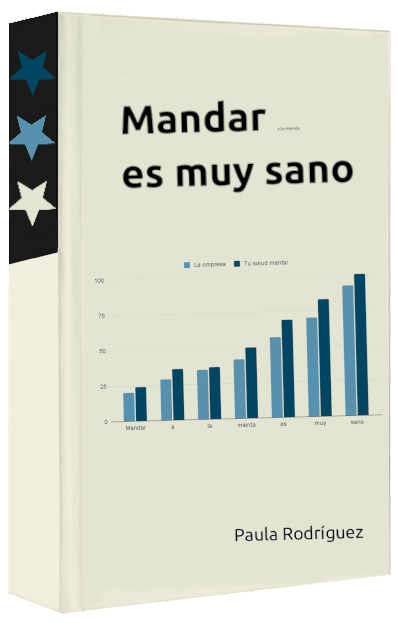

Libro para combatir el ambiente laboral tóxico
Este libro ha sido escrito desde el crecimiento post traumático de haber trabajado varios años en un ambiente laboral tóxico.
Si te identificas con esta situación quizás el libro puede resultarte interesante.
El libro se divide en VII capítulos:
- Los capítulos II y III revisan una parte de la historia del feminismo de la mano del filósofo noruego Ingjald Nissen y la política feminista Berit Ås:
- Capítulo II, Qué son las MST.
- El capítulo IV versa sobre contramedidas para combatir la manipulación:
- Capítulo IV, Contramedidas para combatir las Master Suppression Techniques.
- El capítulo V habla sobre acoso y microagresiones:
- Micromachismo. Esta sección es una entrevista a Luis Bonino, psicoterapeuta experto en salud mental y cuestiones de género.
- Princesas y heroínas. Post de Teresa Busto, ingeniera industrial de Airbus, que escribe sobre machismo en su trayectoria profesional.
- El capítulo VI se enfoca en el entorno laboral moderno. Contiene información útil y ejemplos prácticos para superar el acoso laboral y encontrar un nuevo empleo:
- Ejercicios prácticos para desarrollar la inteligencia emocional.
- Tips para encontrar empleo en el entorno IT.
- Y por último, el capítulo VII contiene algunas reflexiones generales basadas en dos fábulas modernas bastante populares:
- Reflexiones.
- El final del libro es un compendio de todas las URLs usadas como material de consulta:
- Bibliografía.